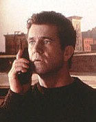

Contents | Features | Reviews | Books | Archives | Store |
 |
|
| Movie Credits | Buy It! |
Ransom
Review by Eddie Cockrell
|  | Directed by Ron Howard. Starring
Mel Gibson, Rene Russo, Screenplay by
Richard Price and |
It is every parent's worst nightmare, especially in these unstable times: a child is kidnapped, and the parents are helpless to influence the outcome of the crisis, swept up with police and FBI agents and the media and fearful that anything they do will trigger the unstable kidnapper (kidnappers?) to harm the youngster.
This, essentially, is the story told by the new big-budget entertainment Ransom. And if the primary function of entertainment is distraction, then it is a real corker, the kind of movie that the most demanding moviegoer can patronize without fear of disappointment (at least until well after the screening, when certain implausibilities might present themselves). But, Hollywood being Hollywood, and the nineties being the nineties, the film is at once about much less and much more than a kidnapping. For instance, the movie isn't about the toll of this traumatic event on the child, but the process by which the protagonist and the antagonist match wits (and, ultimately, face off). Nor is it about exhaustive police work or skillful negotiation or the triumph of good over evil -- the scheme is eventually undone as much as anything else by luck (good or bad, depending on your point of view). What Ransom seems to be very much about is individual empowerment, about taking something essentially uncontrollable and, by force of will, available resources and a large dollop of good fortune, controlling it. While moving away from Rambo-like heroes, Hollywood still wants to make -- and Americans still want to see -- movies about take-charge guys solving knotty problems. In much the same way that poverty-stricken audiences of the Great Depression responded to William Powell solving absurd mysteries in a tuxedo and clamored for similar escapist fare in uncertain times, nervous moviegoers in the nineties like nothing better than Mel Gibson turning the tables on lowlife scum and beating back the forces of wanton evil that terrorize his perfect family. That the average American might not have the same will, resources or luck as Gibson's dogged, crusading, ruthless but aw-shucks likable airline magnate proves that in Hollywood escapism is still king -- and is precisely the reason Ransom has become the first big hit of the 1996 holiday season.
Perched high above Central Park, Tom and Kate Mullen (Gibson and his Lethal Weapon 3 costar Rene Russo) appear to have it all. Tom is rolling out a new ad campaign for the airline he built from scratch, and Kate is active in New York fundraising. Their inquisitive, bright 9-year-old Sean (Brawley Nolte, very much his father Nick in fine miniature) completes the picture-perfect family, swaddled in luxury and privilege. During a fundraising event in Central Park, Sean is kidnapped (in a sequence made all the more creepy by its matter-of-fact normality gone very wrong) and the inevitable ransom demands begin. But Tom, a take-charge kind of guy, is uncomfortable taking orders from a disembodied (and electronically altered) voice, and he is soon clashing with FBI agent Hawkins (Delroy Lindo, so good in Get Shorty) over how to proceed. Further gumming up the works is nervous cop Jimmy Shaker (Gary Sinise), whose interference sends the investigation on an unexpected course. When one ransom exchange goes awry, Mullen takes matters into his own hands and, rejecting the counsel of his wife and the police, announces on network television that the two million dollars cash set aside for the kidnappers is now a bounty on their heads -- thus virtually daring them to kill the child.
Make no mistake about it, Ransom is a clockwork entertainment that represents the very best craftsmanship and acting that Hollywood has to offer. And, on a visceral level, the movie delivers dependably and regularly. You'll be charmed by Sean's kite-flying absorption, traumatized by the cruelty of the kidnappers, nervous but progressively emboldened by Tom's self-confident arrogance, and relieved at the film's inevitable outcome. But Ransom is also the kind of movie that will have you thinking, two blocks away from the theater, "how could Shaker get so much time off of work?" or "even if he does have a friend at the TV station how could Tom pull off an instant broadcast to the bad guys?" or "will Rene Russo's character have anything to do?" or "won't the kid be in therapy forever?" or "how could a movie this suspenseful squander the formidable talents of Lili Taylor?" (whose increasingly desperate felon never approaches the sinister twists she's brought to such independent works as The Addiction and I Shot Andy Warhol).
The answer to these questions can be found in part in the genesis of the script. Based on a 1956 film starring starring Glenn Ford and Donna Reed -- itself adapted from a television play -- the movie's basic good-guys/bad-guys structure must have cried out for updating. This was apparently done by committee, as the original draft by the tremendously gifted Richard Price (The Color of Money, Sea of Love) was significantly altered by director Ron Howard, who though long and hard before finally filming scenes of Sean in captivity, and Gibson, whose idea of having Tom perform intricate tasks while delivering a ransom payment (including an unexpected dip to foul bugging devices) gives the movie a significant amount of action. It is only in the midst of the prolonged third act, when Mullen's efforts to free his boy are superseded by internal squabbling among the kidnappers and a certain indecisiveness seems to subsequently seize the filmmakers, that the velocity decreases significantly.
By then most audiences are in the film's sway, and Ransom's pleasures are persuasive indeed. Howard's mission, as in the acclaimed Apollo 13, was to take a familiar story and make it fresh, unexpected and visually exciting. If some of his previous work has been laboring in the fields of Capricorn (Splash, Far and Away, The Paper), these two films mark a new mood and texture that is encouraging. He's a more than capable filmmaker, and his films beguile audiences by presenting actors and actresses who seem to be having the time of their lives living out the drama (the typical presskit for a Ron Howard movie seems to make a point to explain what fun everyone had making the movie). In this way his work is coming to resemble that of his favorite filmmaker, Billy Wilder, who could take dark material in wildly disparate genres (Double Indemnity, Sunset Boulevard, Kiss Me Stupid) and make it funny and appealing to the masses. Ransom is at once his most accomplished and most manipulative film.
Contributing greatly to the film's success is the work of cinematographer Piotr Sobocinski, who brings the same cold elegance to New York City that he brought to the sublime visual metaphors of Krysztof Kieslowski's Red. And prolific composer James Horner, whose thrilling work includes scores for Gorky Park, Aliens, Field of Dreams and Patriot Games once again provides an aural atmosphere of white-knuckle tension essential to the moviegoing experience.
Of the leads, perhaps Sinise is the finest blend of daring performer and cryptic character. An extremely un-Hollywood-y type who nevertheless seems to be becoming a major star, Sinise has much of the edgy appeal that made the work of John Malkovich (a fellow Chicago stage actor) so promising. Sinise has aligned himself with more mainstream material, which if anything brings the tension inherent in his shifty gaze to the fore. Is he good or bad? And if he's bad, why is he so difficult to dislike? The role of Jimmy Shaker may be underwritten (his motivation is never explained to satisfaction, and the final confrontation flies in the face of all previous logic), but Sinise nevertheless finds ticks and traits to flesh out the performance. Taciturn in interviews, his work speaks volumes about commitment to craft and the art of acting the unexpected.
Caught now in a Hollywood that wants to titillate without offending, Ransom is a movie of skillful compromise that takes a harrowing personal tragedy and makes of it a populist hit. By becoming a box office success, it reaffirms not only the power of a well-told tale to gloss over dramatic deficiencies, but the willingness of a contemporary audience to be seduced by a film that offers conflict resolution through grandstanding tactics and happy endings without substantial emotional investment.
Contents | Features | Reviews | Books | Archives | Store
Copyright © 1999 by Nitrate Productions, Inc. All Rights Reserved.